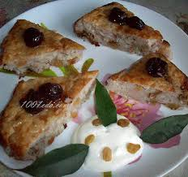

Готуємо вдома
>Рецепти
Запіканка:"Смаколик"

Потрібно:
- 1 стак. рису
- 0,5 стак. сахару
- 3 яблука
- 100 г родзинок
- 1 пакетик ванільного цукру
- 300 г творогу
- 1 яйце
- Вершкове масло
- Потрібно:
- 1 стак. рису
- 0,5 стак. сахару
- 3 яблука
- 100 г родзинок
- 1 пакетик ванільного цукру
- 300 г творогу
- 1 яйце
- Вершкове масло